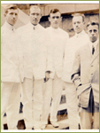
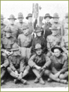

---
---
<!DOCTYPE html PUBLIC "-//W3C//DTD XHTML 1.0 Transitional//EN" "http://www.w3.org/TR/xhtml1/DTD/xhtml1-transitional.dtd">
<html lang="en" xmlns="http://www.w3.org/1999/xhtml">
<head>
<meta http-equiv="Content-Type" content="text/html; charset=UTF-8" />
<meta name="viewport" content="width=device-width, initial-scale=1" />

<title>Photos - Portraits Groups - A History of UCSF</title>
<link href="ucsf_history.css" rel="stylesheet" type="text/css" media="all" />
{% include google_analytics.html %}
</head>

<body>
<div id="mainbody">
{% include ucsf_banner.html %}
<div id="rotator" class="v2"><a href="index.html" id="rotator_home_link"></a></div>
<div id="insidebody">
<div id="photocopy">
<div id="photocopy_text">
  
<div id="subhead">PORTRAITS</div>
<a href="portraits.html" class="bodylink">A – C</a><br/>
    <a href="portraits_D_M.html" class="bodylink">D – M</a><br/>
    <a href="portraits_N_Z.html" class="bodylink">N – Z</a>
    <br />
    Groups<br/>
  <br />
<div id="subhead2">Groups</div>
<div id="photo_thumb_holder"><div id="photo_thumb"><a href="1919_photo6.html"></a><div id="photo_caption">Dentistry class of 1923</div>
</div>
<div id="photo_thumb"><a href="1899_photo5.html"></a><div id="photo_caption">Medical house staff, 1912</div>
</div>
<div id="photo_thumb"><a href="1899_photo31.html"></a><div id="photo_caption">WWI Base Hospital #30 nurses</div>
</div>
</div>
<div id="photo_thumb_holder"><div id="photo_thumb"><a href="1899_photo30.html"></a><div id="photo_caption">WWI Base Hospital #115 physicians</div>
</div>
<div id="photo_thumb"><a href="1940_photo3.html"></a><div id="photo_caption">WWII Base Hospital #30 physicians</div>
</div>
<div id="photo_thumb"><a href="1940_photo5.html"></a><div id="photo_caption">WWII Base Hospital #30 nurses</div>
</div>
</div>
<div id="photo_thumb_holder"><div id="photo_thumb"><a href="1940_photo25.html"></a><a href="1899_photo30.html"></a><div id="photo_caption">Dedication ceremony for cadet nurses' dormitory, R.G. Sproul and Margaret Tracy</div>
</div>
<div id="photo_thumb"><a href="1959_photo5.html"></a><div id="photo_caption">Student Council, 1966</div>
</div>
<div id="photo_thumb"><a href="1959_photo6.html"></a><div id="photo_caption">Black Bulletin, 1971</div>
</div>
</div>
<div id="photo_thumb_holder"><div id="photo_thumb"><a href="1959_photo21.html"></a><div id="photo_caption">Protest, 1970</div>
</div>
</div>
</div>
</div>
<div id="sidebar">
<div id="sidenav_inside">{% include search_include.html %}<br />
    <div id="sidenavtype">
  <a href="story.html" class="sidenavtype"><strong>THE STORY</strong></a><br/>
  <br/>
  <a href="special_topics.html" class="sidenavtype"><strong>SPECIAL TOPICS</strong></a><br/><br/>
  <a href="people.html" class="sidenavtype"><strong>PEOPLE</strong></a><br/>
  <br/>
  <div id="sidenav_subnav_header"><strong><a href="photos.html" class="sidenav_subnav_type_visited">PHOTOS</a></strong></div>
    <div id="sidenav_subnav">
      <div id="sidenav_subnav_links">
      <strong><a href="portraits.html" class="sidenav_subnav_type_visited">Portraits</a></strong><br />
        <br />
        <strong><a href="architecture.html" class="sidenav_subnav_type">Architecture</a></strong><br />
        <br />
        <strong><a href="healthcare.html" class="sidenav_subnav_type">Healthcare, Research & Teaching</a></strong><br />
        <br />
        <strong><a href="cal_history.html" class="sidenav_subnav_type">California History</a></strong></div>
    </div>  <br/>  <a href="buildings.html" class="sidenavtype"><strong>BUILDINGS</strong></a><br/>
  <br/>
  <a href="index.html" class="sidenavtype"><strong>HOME</strong></a></div>
</div>
</div>
</div>
<br class="clearit" />
{% include footer.html %}
</div>
{% include bottom_js.html %}
</body>
</html>
